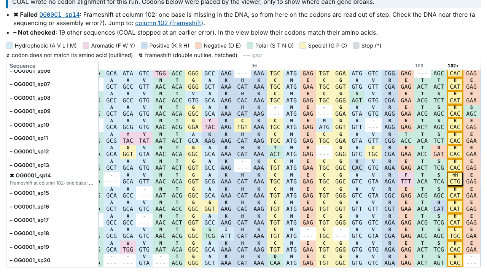

Codon alignments from a protein alignment and its coding DNA
COAL is a drop-in replacement for PAL2NAL v14. It accepts the same input files and options, with a few exceptions. When a gene does not match its protein, COAL says which gene and why, and on long genes it was up to 118.6× faster than PAL2NAL v14 in our measurements.
Download
For this computer
Windows
64-bit Windows 10 and 11
Installs for your user account, without administrator rights. It is not code-signed yet, so Windows asks you to confirm before it runs (what to expect).
For this computer
macOS and Linux
Python 3.10 or newer, with pip
python3 -m venv ~/coal-env
~/coal-env/bin/python -m pip install "coal[gui] @ https://github.com/plumat-coal/COAL/releases/latest/download/coal_src.tar.gz"
~/coal-env/bin/coal-guiMakes a virtual environment in ~/coal-env, installs COAL into it and starts the app
(details for macOS and Linux). COAL is not on
PyPI, so a plain pip install coal gets you a different package.
Source code
Python source package, coal_src.tar.gz
The source of the newest release. The repository is on GitHub.
What it looks like
In the repository's one_broken_gene example, 1 of 20 genes is missing a base. COAL stops, names the
gene and the column, and writes nothing:
$ coal examples/one_broken_gene/protein.aln.fasta examples/one_broken_gene/dna.fasta -o codon.aln.fasta
coal: error: OG0001_sp14: protein and DNA are inconsistent (no match found)
coal: summary: OG0001_sp14: Frameshift at column 102: one base is missing in the DNA, so from here on the codons are read out of step.
coal: summary: The run stopped at OG0001_sp14: 6 sequences were not checked and no output was written. Add --keep-going to write the other sequences and leave this one out.
$ echo $?
1
Why use it
-
PAL2NAL command lines work
The
pal2nalcommand accepts a PAL2NAL v14 command line unchanged. Our test suite compares COAL with stored PAL2NAL v14 output in 285 checks; every difference is deliberate and documented. -
A broken gene stops the run
A frameshift is an error with exit status 1. PAL2NAL v14 reports an inconsistency but exits with status 0, so a pipeline would carry on.
-
Large inputs are quick
10,000 genes of 500 codons took 24.7 s with PAL2NAL v14 and 0.864 s with COAL, start-up included. On tiny inputs COAL is slightly slower.
Cite
If you use COAL in published work, please cite the version you used, and PAL2NAL too.